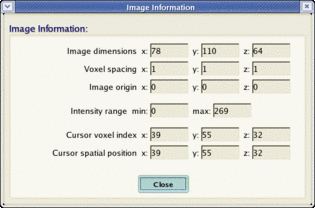
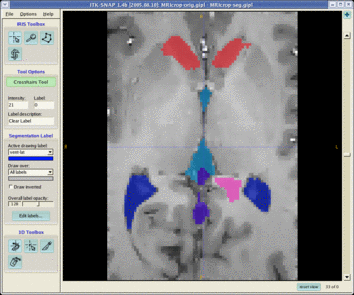
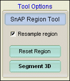
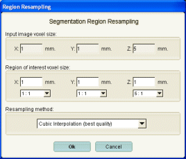
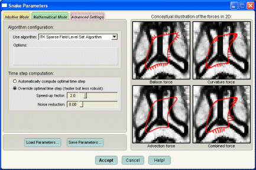
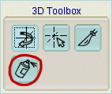
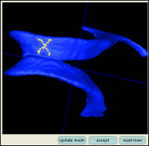

This section contains a list of loosely organized list of SNAP features that can make it a more powerful tool than it may appear at first look. Click below to jump to a specific tip:
SNAP includes an image information window that can be brought up at any time. The window displays dimensions of the image, voxel size, current cursor location and other useful information.
| Select File | Image Info ... |

When performing manual segmentation, it may be useful to dedicate a larger area of the screen to a single slice of the 3D image. SNAP allows you to replace the standard four-view layout (three slice views and a 3D view) with a single-view layout.
| Click on the plus button ( ) in one of the four views to expand that view. |

| Click on the plus button ( ) in the expanded view to collapse the view and display the other three views. |
In this tutorial, automatic segmentations were initialized using 'bubbles'. There is an other way to initialize segmentation. Whenever you enter the automatic segmentation mode with some label X as the current drawing label, all the pixels already labelled X will be passed on to the automatic segmentation mode as initialization pixels. Therefore, you can use the results of one segmentation attempt to initialize another. You can also use manual segmentation tools to construct the snake initialization.
The snake evolution algorithms used in SNAP are poorly suited for non-isotropic images, especially wen anisotropy is great, e.g., when pixels have size 1x1x3 or 1x1x5, which is quite common in medical images. The option to resample an image has been added to SNAP especially for dealing with such images
Before entering the automatic segmentation mode, you have an option to resample the region of interest passed on to automatic segmentation. Just check the box 'Resample Region' before pressing the Segment 3D button.

After you press Segment 3D, the Region Resampling window will appear:

You can use this window to change the dimensions of the pixels that will be passed on to SNAP's automatic segmentation mode. For instance, if the input image has 1x1x5 pixels, you can have SNAP replace each pixel by 5 isotropic ones, as shown above. Be aware, however, that supersampling an image in this way increases memory usage (fivefold in this case), and should be done only for small regions of interest. A more conservative option is to resample 1x1x5 pixels to 2x2x2 pixels.
The automatic segmentation will be performed on the resampled image, and the results will be resampled back to the resolution of the original, anisotropic image.
You can choose between cubic, linear, and nearest neighbor interpolation modes. Cubic produces the best quality resampled images, but is slow. Nearest neighbor interpolation is fast but results in greatest distortion. Cubic interpolaion is recommended in most cases.
The 'Advanced' tab of the snake parameter setting window is shown below:

This tab allows you to change the algorithm used for snake propagation. At the time of this writing, the default Sparse Field Level Set Algorithm is the most efficient option. The Narrow Band Level Set Algorithm is a little slower and some small differences in the results of the two methods have been detected. The Narrow Band algorithm is more robust with respect to increasing the segmentation time step (see next paragraph). The Dense Level Set Algorithm is included purely for experimental purposes. It is orders of maginitude slower that the other two options.
This tab also allows you to override the default time step used in snake propagation. The default setting is to use the so-called optimal time step: the largest time step that allows some mathematical guarantees on the segmentation error to be established. In practice, it is possible to use a larger time step value, resulting in proportionally faster segmentations, but at a cost of (sometimes unpredictable) error. We recommend overriding the optimal step when doing rough segmentations on large regions of interest.
The experimental noise reduction option can be used in conjunction with overriding the optimal time step. For very large speedups, it may reduce the error accumulation. We recommend to leave the noise reduction setting at zero.
You may have noticed that the speed of segmentation in SNAP is roughly proportional to the size of the structure you are segmenting. If that were always the case, it would take a very long time to segment large structures such as the whole of the brain white matter or gray matter. Luckily, SNAP provides a couple of ways to speed up large segmentations.
The first way is to take advantage of the option to resample the region of interest when entering the automatic segmentation mode. The details on such resampling are given in the Tip on Automatic Segmentation of Anisotropic Images.For example, if the original image has 1mm cube pixels and you resample it to 2x2x2 resolution, you will reduce the amount of memory needed for segmentation by eightfold and will speedup the segmentation by an eightfold as well. The gains in speed come, of course, at the price of accuracy. However, you can use subsampling to get a 'quick and dirty' segmentation and then use that segmentation as an initialization to another segmentation, this time without resampling. See the Tip on Another Way to Initialize Segmentations for more details on using segmentation results for initialization of subsequent segmentations.
The second way to speed up segmentations is to override the default time step used for snake propagation. See the Tip on Advanced Parameter Settings for details.
The manual mode of SNAP includes the 3D spray paint tool .

This tool is used to mark points on the surface of the 3D rendering of the segmentation results with the active drawing label. Simply select this tool, position the mouse over a rendered segmentation results (e.g., ventricles, as shown below), and press the left mouse button. Tiny bubbles will appear on the surface of the segmented structure under the mouse. You can move the mouse while pressing the left mouse button. Press the Accept button to relabel the pixels corresponding to these bubbles with the active drawing label, or press the Reset View to discard the spray painted bubbles.

Spray painting is useful for assigning unique labels to specific anatomical landmarks. It can also be used for tracing curves on the surface of anatomical structures, e.g., for rough tracing of the sulci or gyri.